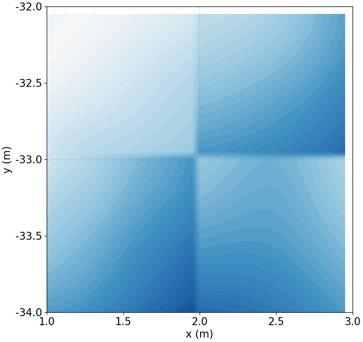
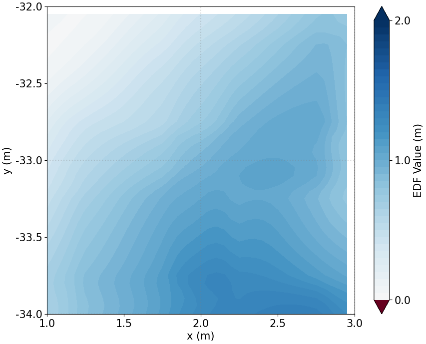
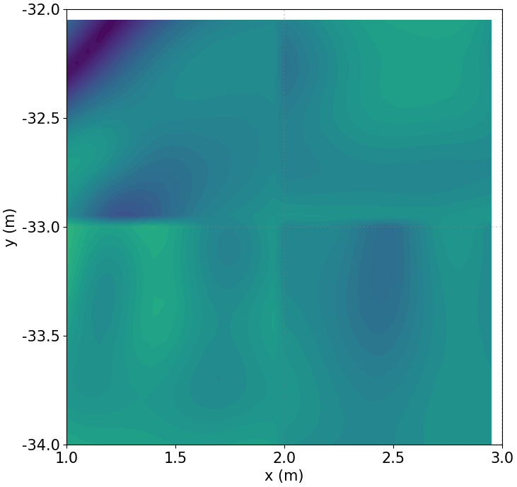
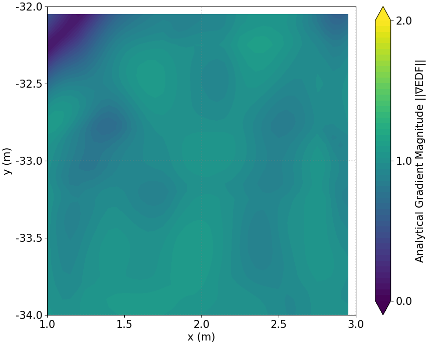

Continuous Distance Field Representation using
Block-Sparse Gaussian Mixture
Models
We present G-EDF, a novel framework for representing large-scale 3D environments as a continuous, memory-efficient distance field. The Euclidean Distance Field (EDF) is modeled using a Block-Sparse Gaussian Mixture Model, where anisotropic Gaussians serve as universal function approximators. The space is partitioned into adaptive blocks that are seamlessly blended to guarantee global C1 continuity. The result is a highly compressed map enabling efficient CPU-based inference for gradient-based localization and navigation.
The distance field is represented as a weighted sum of K anisotropic Gaussian kernels. Each kernel has:
Negative weights carve sharp valleys near surfaces, enabling precise zero-crossings.
Space is partitioned into 1m³ cubes. Each trains an independent GMM, enabling parallel processing at scale.
Gaussian count scales with geometric complexity. Simple regions use fewer kernels; complex areas get more.
Adjacent blocks share overlap margins blended via Smoothstep: α(t) = 3t² − 2t³, ensuring gradient continuity.
Closed-form ∇d̂(x) satisfies ‖∇d̂‖ ≈ 1 throughout the volume for stable optimization.
Comparison on New College dataset (z = 3.0m) with 1.0m³ blocks and δ = 0.25m overlap.




C++17 implementation with OpenMP parallelization and Ceres Solver.
mkdir -p build && cd build
cmake .. -DCMAKE_BUILD_TYPE=Release
make -j$(nproc)